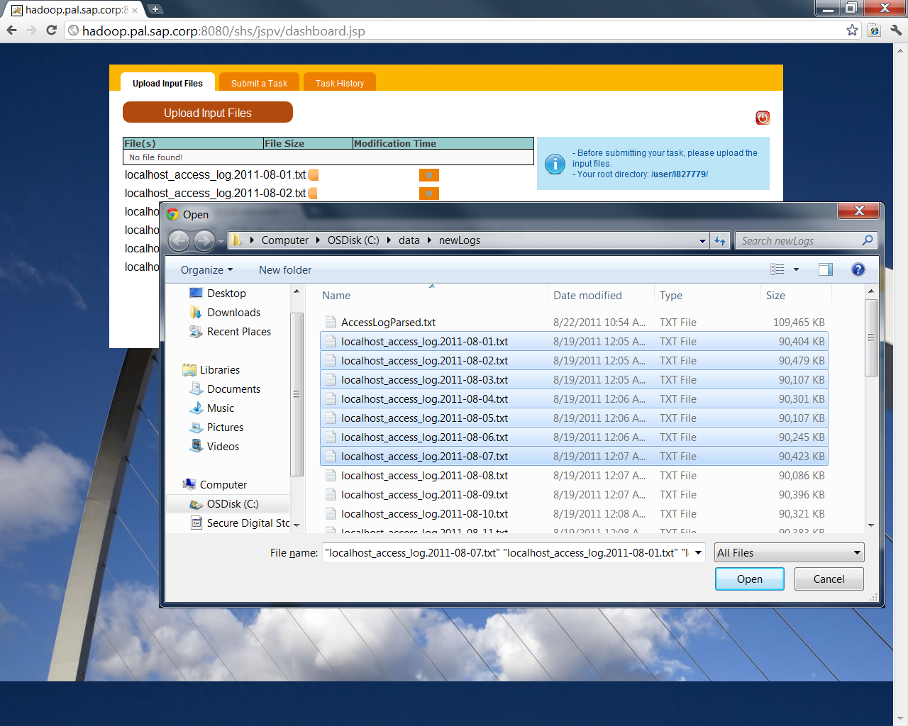
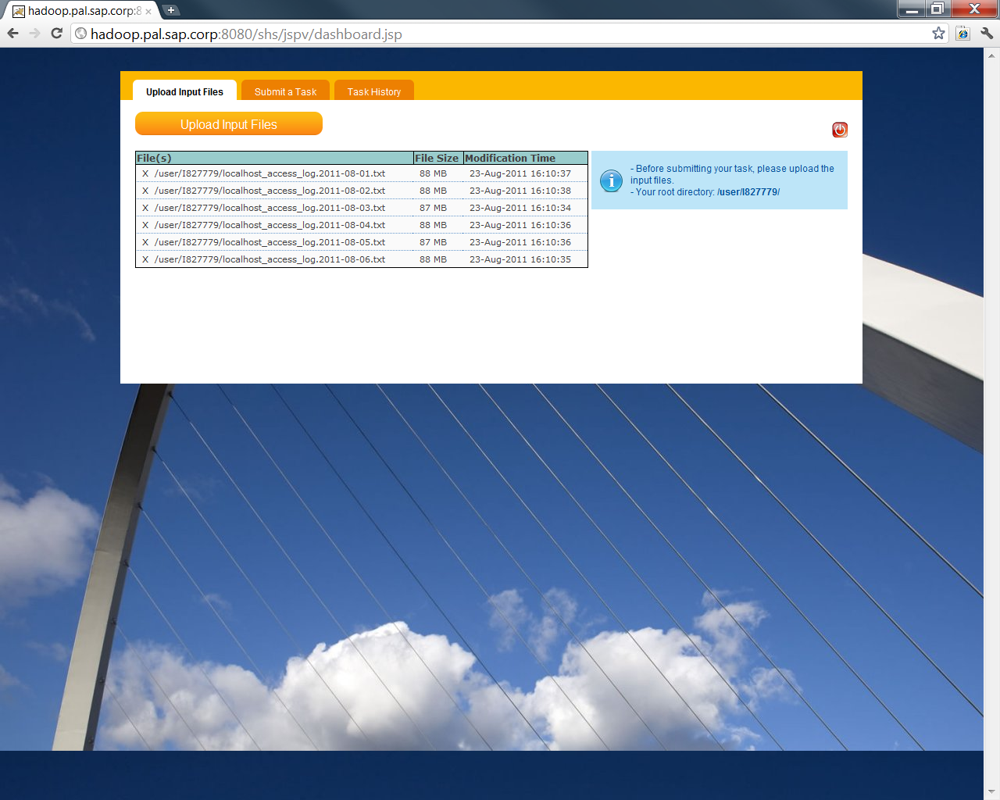
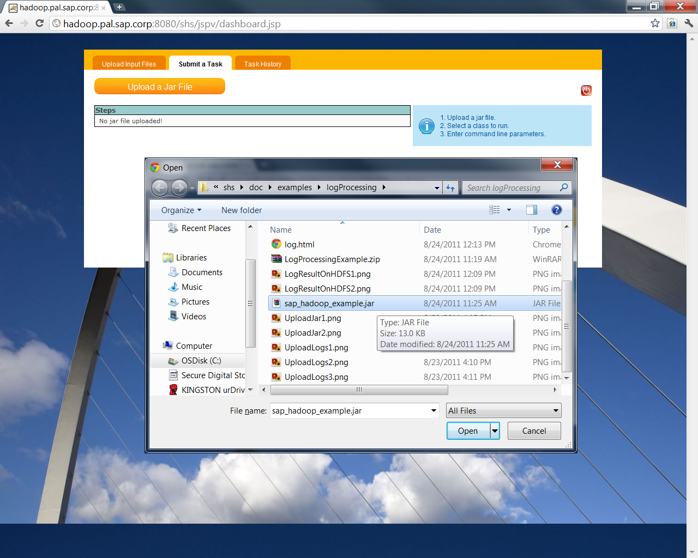
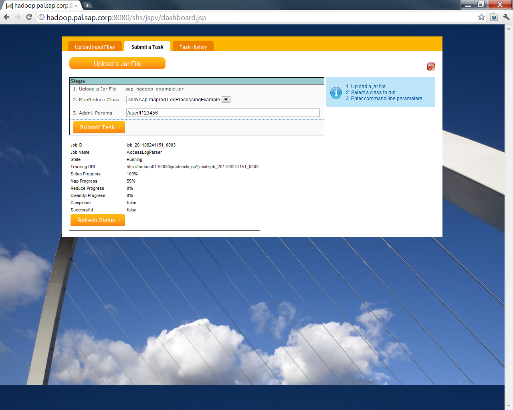
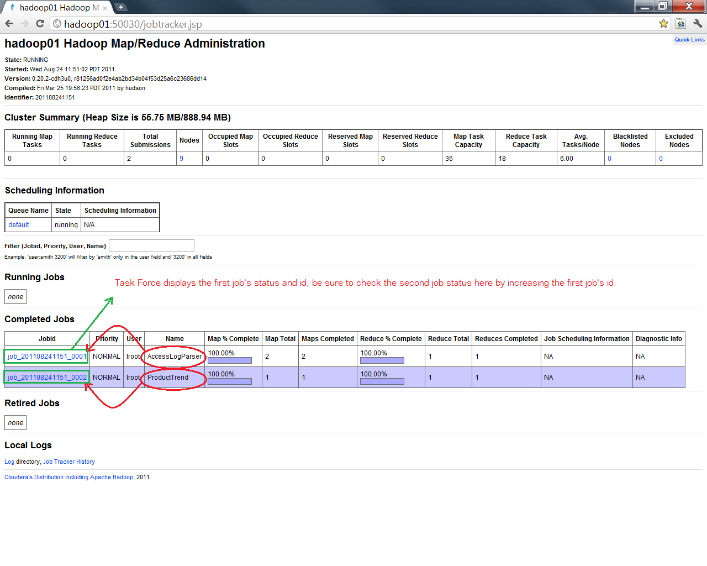
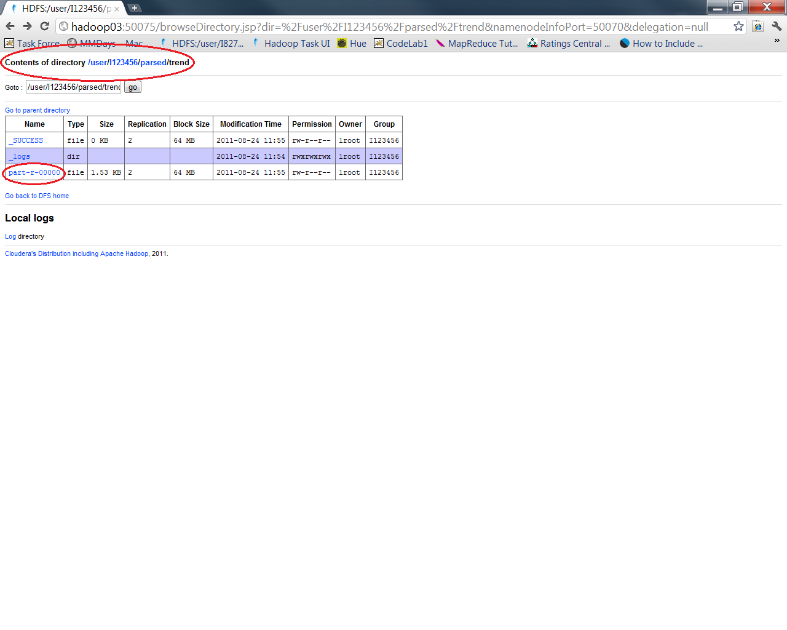
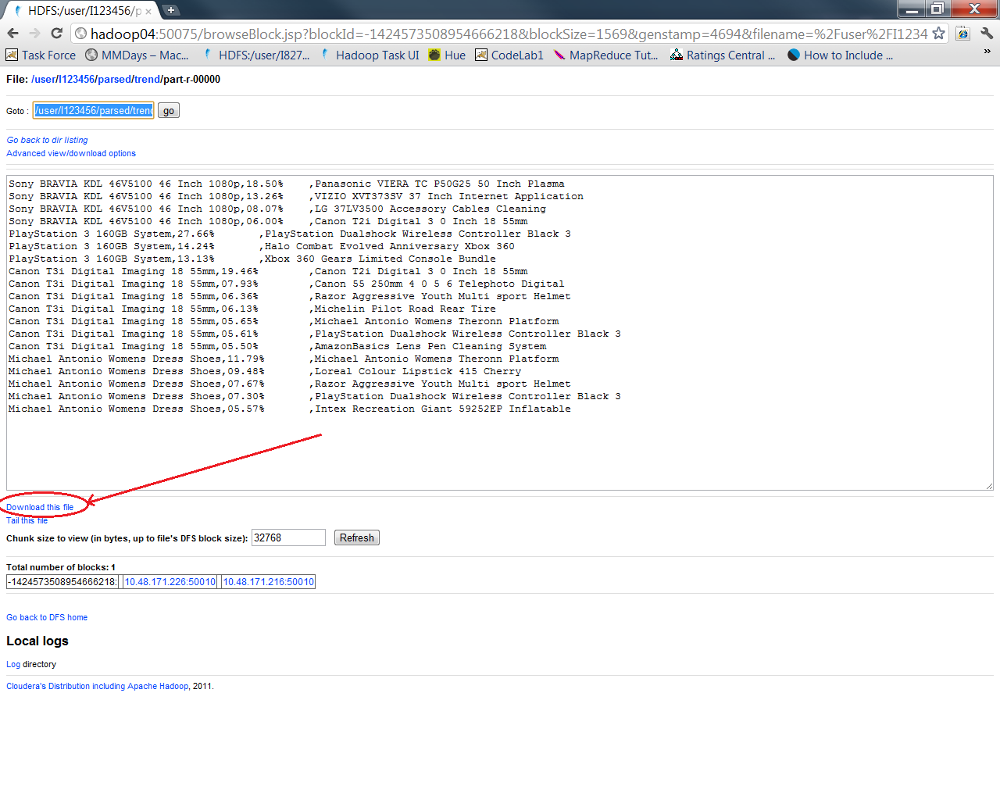

If you have arrived this page, that means you have certain understanding about Hadoop. Now let's focus on a relatively common usage -- Log Processing.
The log files used in this example are in the format used by Apache Web Server and Apache Tomcat Application Server.
If you wish to parse different log files in different format, please change the MapReduce source code accordingly.
If you wish to modify the code and parse your own log, then please do the following steps after completing Prerequisites 1.
1. Upload the sample log files to your HDFS personal folder or the visitor HDFS folder (I123456/hadoopsap) via Task Force Web Application.


In case you need some guidelines about how to use Task Force Web Application, please refer to code lab 2.
2. Go to the "Submit a Task" tab in Task Force and upload the sap_hadoop_example.jar.

3. Select "com.sap.mapred.LogProcessingExample" in the "MapReduce Class" drop down list and enter the HDFS directory containing the log files, for example: /user/I123456/

4. Go to Hadoop's Task Status page and make sure you see your 2 jobs have completed (AccessLogParser and ProductTrend).
There will be 2 jobs running once you have done Step 3, the first job will be displayed in Task Force but the second job is not shown by Task Force and can only be checked manually in via Hadoop Job Status page using the job id.

5. You can view the result of the log processing result, please fo to HDFS status page and click on "Browse the filesystem" to preview/download the result file called "part-r-00000", for example: /user/I123456/parsed/trend/part-r-00000.


1. Access Log Format
The Apache Web/Tomcat Application Server access log is generated in the following format:
198.93.34.21 - frank [02/Aug/2011:00:00:01 -0700] "GET /Antec-EA-380D-Power-Supply/dp/B002UOR17Y/ HTTP/1.1" 200 7577
169.145.89.205 - - [02/Aug/2011:00:00:03 -0700] "GET /Antec-EA-380D-Power-Supply/dp/B002UOR17Y/ HTTP/1.1" 200 247
198.93.34.21 - - [02/Aug/2011:00:00:04 -0700] "GET /Michelin-Pilot-Road-Rear-Tire/dp/B004MDSTW2/ HTTP/1.1" 200 102
198.93.34.21 - - [02/Aug/2011:00:00:06 -0700] "GET /Razor-Wild-Style-Kick-Scooter/dp/B002S0YPUG/ HTTP/1.1" 200 833
10.48.58.42 - - [02/Aug/2011:00:00:08 -0700] "GET /Peg-Perego-Polaris-Outlaw-Pink/dp/B003JI62HU/ HTTP/1.1" 200 561
private static AccessData getAccessData(String line) {
// An AccessData object will be created for each line if possible
AccessData accessData = null;
try {
accessData = new AccessData();
// Parse the value separated line using space as the delimiter
CSVParser csvParser = new CSVParser(new StringReader(line));
csvParser.getStrategy().setDelimiter(' ');
// Now get all the values from the line
String[] values = csvParser.getLine();
// Get the IP
accessData.ip = values[0];
// The time is split into 2 values so they have to be combined
// then sent to match the time regular expression
// "[02/Aug/2011:00:00:04" + " -0700]" = "[02/Aug/2011:00:00:04 -0700]"
accessData.timestamp = new Timestamp(DATA_FORMAT.parse(values[3] + " " + values[4]).getTime());
// The resource filed has 3 fields (HTTP Method, Page and HTTP protocol)
// so it has to be further split by spaces
String reqInfo = values[5];
String[] reqInfoArr = reqInfo.split(" ");
// Get the HTTP method
accessData.method = reqInfoArr[0];
// Get the page requested
accessData.resource = reqInfoArr[1];
// Get the HTTP response code
accessData.httpCode = Integer.parseInt(values[6]);
// Try to get the response data size in bytes, if a hyphen shows up,
// that means the client has a cache of this page and no data is
// sent back
try {
accessData.dataLength = Long.parseLong(values[7]);
} catch (NumberFormatException nfe) {
accessData.dataLength = 0;
}
return accessData;
} catch (IOException ioe) {
LOG.info(ioe);
return null;
} catch (ParseException pe) {
LOG.info(pe);
return null;
}
}
10.48.101.113 1312182008000_B000PKZ8EI,1312182008450_B004MDSTW2,1312182011000_B0015AARJI,1312182011000_B003AUF1XI
| | | | |
IP First Product Second Product Third Product Forth Product
1. Product Trend Map Method
The output of the LogParser is users' browsing history and now we need to find the most popular products after a given product is visited.
To do this, we need to read the LogParser's output line by line and to find all pairs of 2 contiguous products when their visit times are within a reasonable interval.
This is the basically logic of the ProductTrend's map method and below is its sample output:
B000PKZ8EI B004MDSTW2
B004MDSTW2 B0015AARJI
B000PKZ8EI B004MDSTW2
B0015AARJI B003AUF1XI
B000PKZ8EI B004MDSTW2
B0015AARJI B003AUF1XI
Sony BRAVIA KDL 46V5100 46 Inch 1080p,18.50% ,Panasonic VIERA TC P50G25 50 Inch Plasma
Sony BRAVIA KDL 46V5100 46 Inch 1080p,13.26% ,VIZIO XVT373SV 37 Inch Internet Application
Sony BRAVIA KDL 46V5100 46 Inch 1080p,08.07% ,LG 37LV3500 Accessory Cables Cleaning
Sony BRAVIA KDL 46V5100 46 Inch 1080p,06.00% ,Canon T2i Digital 3 0 Inch 18 55mm
PlayStation 3 160GB System,27.66% ,PlayStation Dualshock Wireless Controller Black 3
PlayStation 3 160GB System,14.24% ,Halo Combat Evolved Anniversary Xbox 360
PlayStation 3 160GB System,13.13% ,Xbox 360 Gears Limited Console Bundle
Canon T3i Digital Imaging 18 55mm,19.46% ,Canon T2i Digital 3 0 Inch 18 55mm
Canon T3i Digital Imaging 18 55mm,07.93% ,Canon 55 250mm 4 0 5 6 Telephoto Digital
Canon T3i Digital Imaging 18 55mm,06.36% ,Razor Aggressive Youth Multi sport Helmet
Canon T3i Digital Imaging 18 55mm,06.13% ,Michelin Pilot Road Rear Tire
Canon T3i Digital Imaging 18 55mm,05.65% ,Michael Antonio Womens Theronn Platform
Canon T3i Digital Imaging 18 55mm,05.61% ,PlayStation Dualshock Wireless Controller Black 3
Canon T3i Digital Imaging 18 55mm,05.50% ,AmazonBasics Lens Pen Cleaning System
Michael Antonio Womens Dress Shoes,11.79% ,Michael Antonio Womens Theronn Platform
Michael Antonio Womens Dress Shoes,09.48% ,Loreal Colour Lipstick 415 Cherry
Michael Antonio Womens Dress Shoes,07.67% ,Razor Aggressive Youth Multi sport Helmet
Michael Antonio Womens Dress Shoes,07.30% ,PlayStation Dualshock Wireless Controller Black 3
Michael Antonio Womens Dress Shoes,05.57% ,Intex Recreation Giant 59252EP Inflatable
The ProductTrend MapReduce logic is relatively easier than LogParser and more like statistics but the LogParser would provide the basic input for many business cases. With Hadoop's support, now-a-days enterprises can find useful information from huge non-related data and optimize their business accordingly.
For further coding exercise, please read though the code and add/modify ProductTrend to find users who have been visiting more than 20 products in 3 seconds.